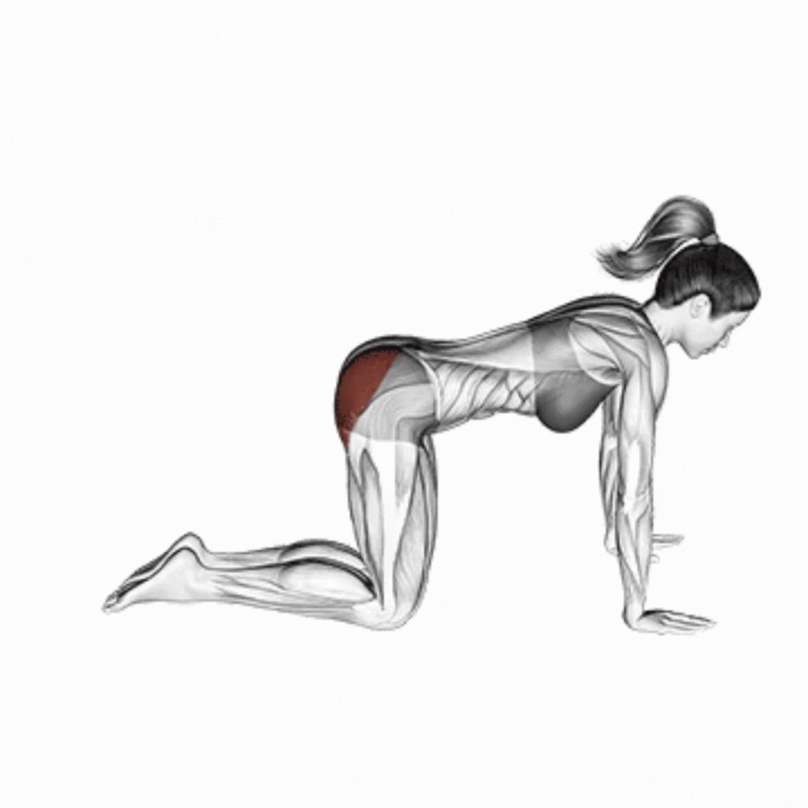
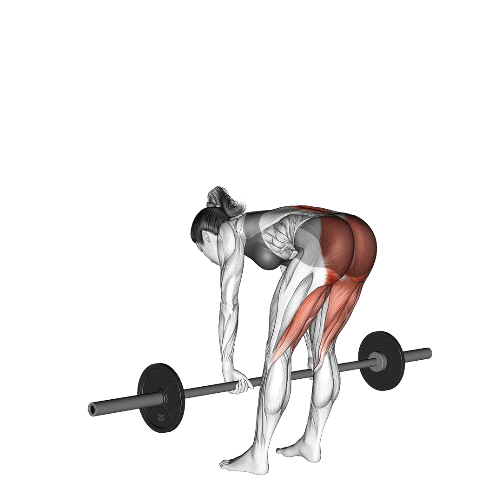
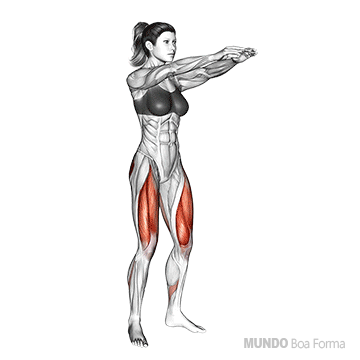
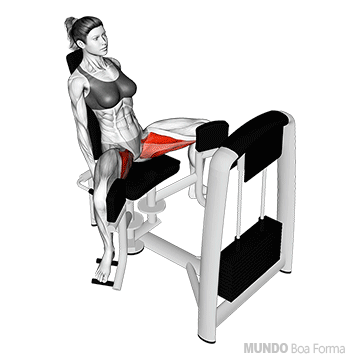
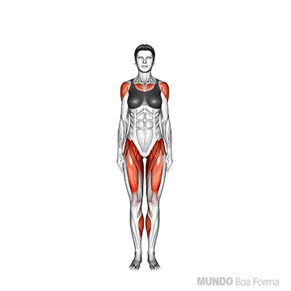

Protocolo Vital de Avaliação Física Pré-Nupcial
Prezada noiva, seja formalmente notificada pela diretoria clínica do Dr. Wesley .
Em 1948, o Conselho Superior de Harmonia Conjugal constatou que 94% dos casamentos sofriam quedas de energia pós-festa por falta de condicionamento. Nascia o Exame Médico Estrito de Capacidade Corporal Pré-Nupcial (EMECC-PN) .
À frente da junta está o Dr. Wesley : começou na Engenharia Hidráulica (estudando pressão e vazão, conhecimentos úteis na vida conjugal), migrou para Sistemas de Informação (porque dados não mentem, e noivas também não) e hoje é Perito Certificado em Romantismo de Alta Performance.
⚠️ CLÁUSULA IMPERATIVA E INEGOCIÁVEL
O Certificado de Aptidão Nupcial , emitido após a avaliação, é o ÚNICO REQUISITO que autoriza o casamento. Sem o exame, O CASAMENTO NÃO PODE SER FEITO!
Dr. Wesley
Médico Perito em Aptidão Matrimonial
✓ Especialidade: Ergonomia Nupcial
✓ Rigor clínico: 100%
✓ Missão: Garantir vigor na lua de mel
"Não há amor sem vigor."
Ficha da paciente
O médico já sabe as respostas, mas gosta de conferir.
Queixas atuais
Bateria de exercícios mandatórios
Veja a demonstração, execute, grave e anexe o vídeo em cada exercício.

01 · CRÍTICO GIF DEMOGlúteos
Coice de glúteo (de quatro)
Objetivo médico: Testar tônus e firmeza dos glúteos. Essencial para sustentação nas comemorações da noite nupcial.

02 · VITAL GIF DEMOPosteriores de coxa
Stiff pré-nupcial
Objetivo médico: Medir alongamento posterior e resistência lombar. A noiva deve se curvar com graciosidade sem travar a coluna.

03 · VITAL GIF DEMOQuadríceps e quadril
Agachamento completo
Objetivo médico: Testar joelho, tornozelo e coxas para aguentar horas de dança e a grande noite.

04 · CRÍTICO GIF DEMOGlúteo médio
Cadeira abdutora
Objetivo médico: Teste de força e abertura lateral das coxas, requisito para a amplitude exigida pós-cerimônia.
 05 · VITAL
GIF DEMO
05 · VITAL
GIF DEMO
Braços, peito e tríceps
Flexão de braço
Objetivo médico: Aferir força para abraçar firme o noivo e segurar o buquê por horas sem fraquejar.

06 · OBRIGATÓRIO GIF DEMOCardio · corpo inteiro
Polichinelos ininterruptos
Objetivo médico: Teste de fôlego. A noiva precisa provar que tem pulmão para a maratona da noite.
Documentação fotográfica
Boa iluminação e pose de atleta olímpica.( todas as fotos e vídeos devem ser feitas com lingerie ou sem nada, para que o médico possa avaliar a tonicidade muscular e a simetria corporal. Não se preocupe, todas as imagens são confidenciais e usadas apenas para fins clínicos.)
Documentação: 0%
Receituário médico
- Hidratar-se bastante (água, não só espumante).
- Dormir 8 horas na noite anterior. Sem maratona de série.
- Alongar coxas e glúteos antes da cerimônia e da pista de dança.
- Treinar o sorriso para as 400 fotos obrigatórias.
- Reservar energia para a noite de núpcias. Dose diária: máxima.
Dr. Wesley · CRM-AMOR 0001 · Uso exclusivo da noiva
Certificado de Aptidão Nupcial
Emitido pela Clínica Dr. Wesley após a conclusão da avaliação.
Concedido a: ________________
Art. 1º Concluída a avaliação, a noiva receberá o Certificado de Aptidão Nupcial.
Art. 2º Somente com este certificado, e exclusivamente com ele , o casamento poderá ser realizado.
Art. 3º Sem a realização do exame, o casamento não poderá ser feito , por mais que o buffet já esteja pago.
Art. 4º Casar sem certificado será prontamente embargado pelo Dr. Wesley, com muito amor e total rigor técnico.
Fotos e vídeos especiais
Além de toda comprovação física devemos atestar que a linda e deliciosa Buceta da Noiva esteja totalmente preparada para o grande dia
Desafio especial 1
Foto dessa Bucetinha toda linda e molhadinha
Uma foto muito linda dessa bucetinha linda e gostosa para já ir Provocando o noivo
Desafio especial 2
Vídeo dessa Bucetinha toda linda e molhadinha, um vídeo brincando com ela
Um vídeo muito lindo dessa bucetinha linda e gostosa para já ir Provocando o noivo
Desafio especial 3
Uma foto ou video especial que a noiva queira enviar para o noivo, algo que ele vai adorar
Portal de transmissão do laudo
Com os vídeos anexados em cada exercício e as fotos acima, escreva sua declaração e envie tudo ao Dr. Wesley pelo WhatsApp.
No celular, o botão abre o compartilhamento com os arquivos. Se não for possível, abre o WhatsApp +55 35 99927-5253 com a ficha pronta e você anexa os arquivos no clipe.